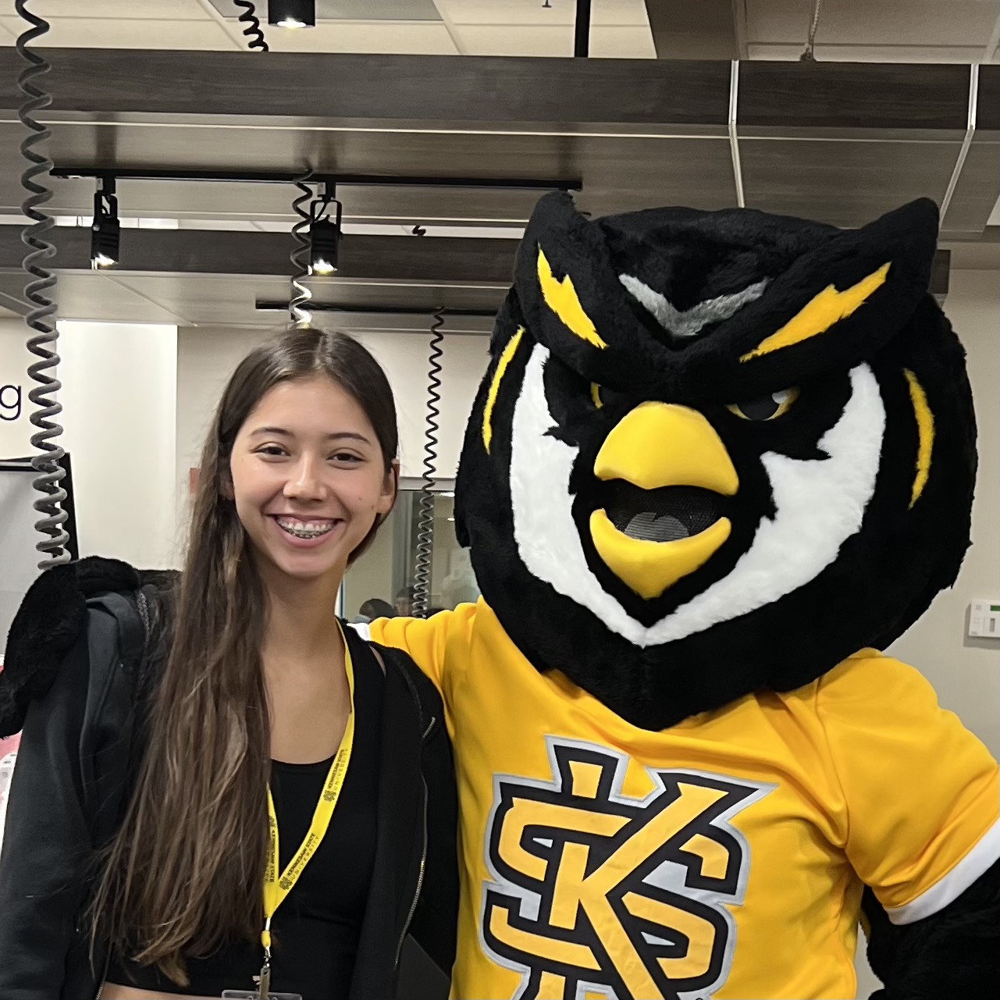
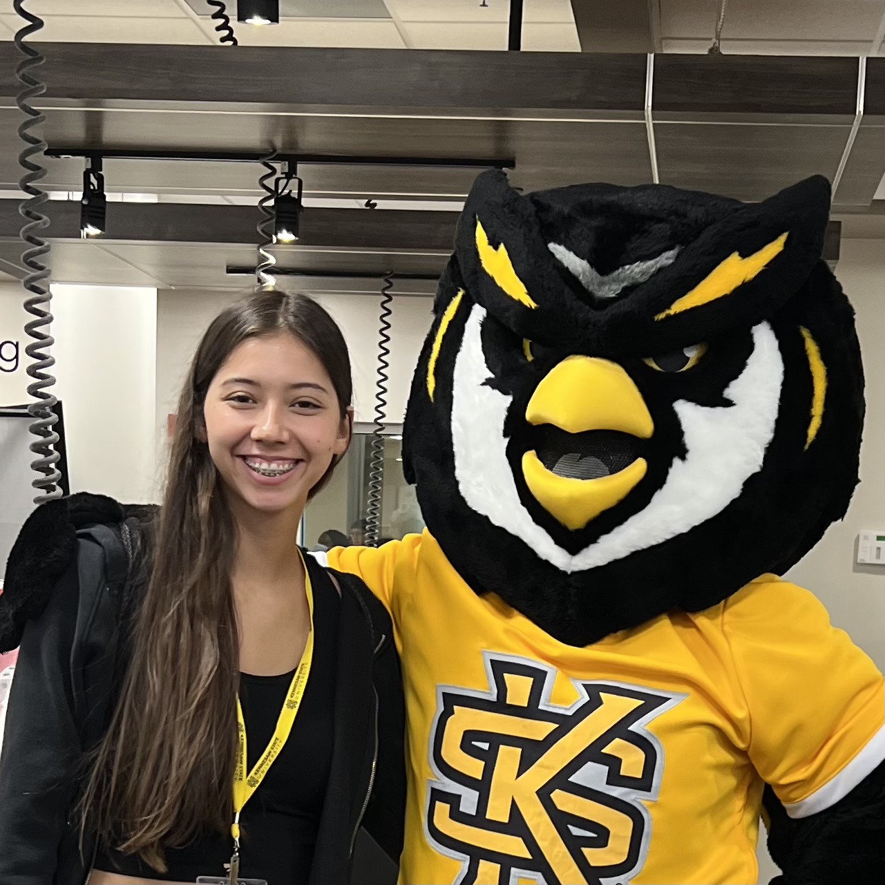

About My Journey at KSU
I am currently in my junior year as an undergraduate at Kennesaw State University. My program is a Bachelor of Science in Information Technology (BSIT) with a concentration in Data Analytics and Technology. Since the end of my first year at KSU, I have been actively involved in a co-op position as an IT Josbite Liaison, which I secured through a career fair held at KSU. Kennesaw State University has been more than just an educational institution for me; it has been a place of growth, exploration, and community.